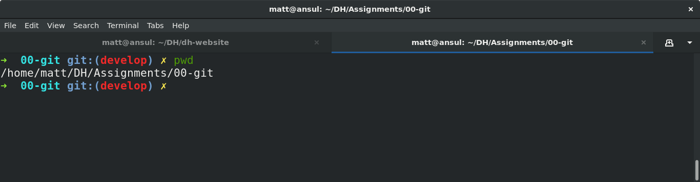
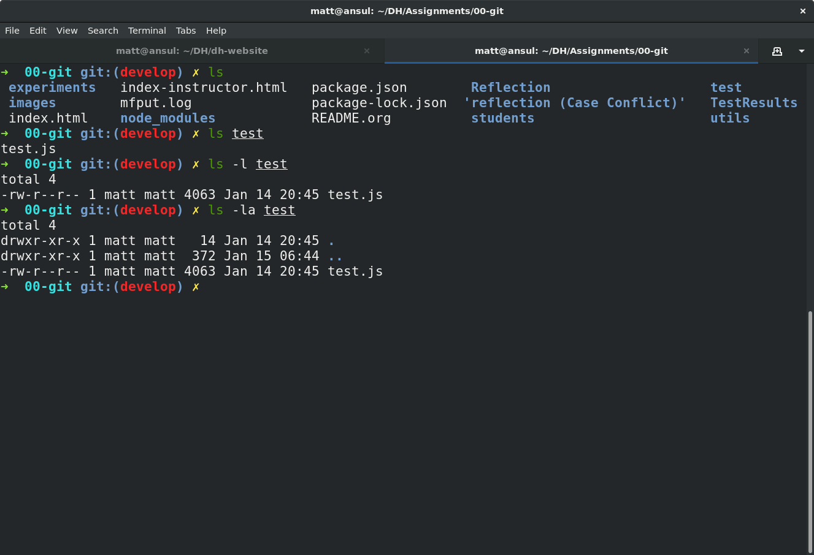
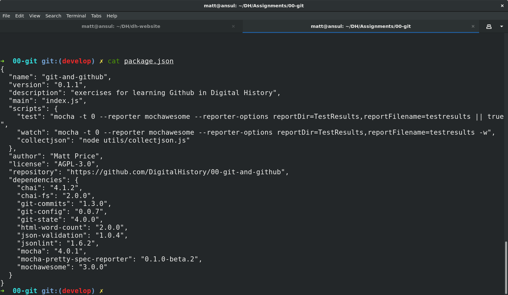

Navigating at the Command Line
The Programming Historian link below is excellent. Having some trouble with screenshots ATM, will fix soon as I can reload my desktop – but for next few hours pls refer to the PH link for images!
One common issue for people new to the command line is that it can be tough to understand the notion of location in the filesystem. Most ordinary users interact with their filesystems through the so-called GUI layer – the graphical interface of windows. Often the user-accessible files are more or less restyricted to special directories (or “folders”) with meaningful names like Desktop, MyDocuments, etc. However, once you start working at the command line this convenient feature can become something of a curse. It’s important to recognize that these special locations are just part of a complex, hierarchical filesystem – a branching tree of directories and files, on which your operating system relies in many ways. You will need to learn to navigate that filesystem, not from the GUI, but from the command line.
When you first start using the command line, it often feels (a) confusing and (b) somehow primitive or over-simple. The command line is, in fact, a sophisticated and incredibly efficient way to interact with the filesystem – but you need to learn your way around it first. In this class we won’t discuss the wonderful world of shell scripting (see below for guides to scripting); instead, I just want you to learn a few very basic commands to help you move around.
Navigation
The file system is a “branching tree” of files and folders. At the top (or bottom, depending on how you imagine things) of the tree is the “root”. In bash, we represent this as /. Every folder has a path that starts with / and proceeds down the file hierarchy. So, for instance, my global git configuration is located at /home/matt/.gitconfig. / is the root. /home/ is where all user files can be found. /home/matt/ contains all my user files. /home/matt/.gitconfig identifies the specific file I’m looking for.
Your file explorer will represent this tree for you visually; you can also picture it schematically, as is done e.g. in the following image:

We can also explore from the command line. Here are a few basic commands to learn for this purpose. [ Note: in the screenshots below, my command prompt is heavily customized and includes some extra information. Most notably, it tells me when I am in a git repository and gives me the name of the current git branch. You can experiment with changing your bash prompt in the ~/.bashrc file that controls many features of the
pwd
pwd is short for “print working directory”, and will show you where you are in the file system.

ls
ls will list the contents of a directory. With no further arguments it will list the directory you’re currently in, but you can ask it to list some other directory too. Here are some examples. Note the “switches” -l and -la. Switches give further instructions to the command. In this case -l means “long” while -a is short for “all”. You can see in the screenshot below what the effect is.

cd
Short for “change directory”, cd allows you to move through the filesystem.
cd someDirectoryNamewill move you into the subdirectory “someDirectoryName” of your current directory.cdwith no arguments, or “cd ~ “, will drop you back into your home directory (this is helpful if you get lost somehow). At the command line, the tilde (~) is short for “home directory”, so you can use it anywhere instead of typing out your whole whome directory name.cd ..orcd ../will move you “up” one level in the filesystem – so if you are currently in/home/matt/digitalHistory, executingcd ..will move you to/home/matt/.
cat and less
Sometimes you want to look at the contents of a file. cat and less are two ways to do so. cat will print the contents of the file directly to your terminal window. less will create a simple interface that you can use to scroll through a longer file using a keyboard interface.

mkdir and touch
mkdir will create a new directory, while touch will create a new (empty) file.
mkdir some-directory-name
touch some-directory-name/somefile.txt
These commands will create the file somefile.txt in the folder some-directory-name, inside the current working directory.
Arrow Keys and Tab Expansion
often we make mistakes typing or are unsure of spelling, etc. Two kinds of shortcuts make for huge time savings:
- arrow keys can be used to navigate through your previous commands – typing
↑will reproduce your previous command, allowing you to correct any errors you might have made the last time you typed out some complex command and made a small error. Each time you type an↑, you will move one command up in the command history. To get back down, type↓. - you can type
TABpart way through a command to get a list of possible completions. If there’s only one possible command that starts with what you’ve typed so far, bash will complete it for you. Similarly, typing part of a file or directory name after a command has been entered will usually get you a list of possible completions. Try it a few times and you’ll see how much time it saves.
Learn More
OK, that’s all for now, hopefully this helps you navigate around your projects. I may add to this guide as we go through the semester, but here are some further guides.
- this introduction is quite clear and simple
- the programming historian has a great guide too
- the TLDP guide introduced generations of programmers to bash scripting, and is still a useful reference point